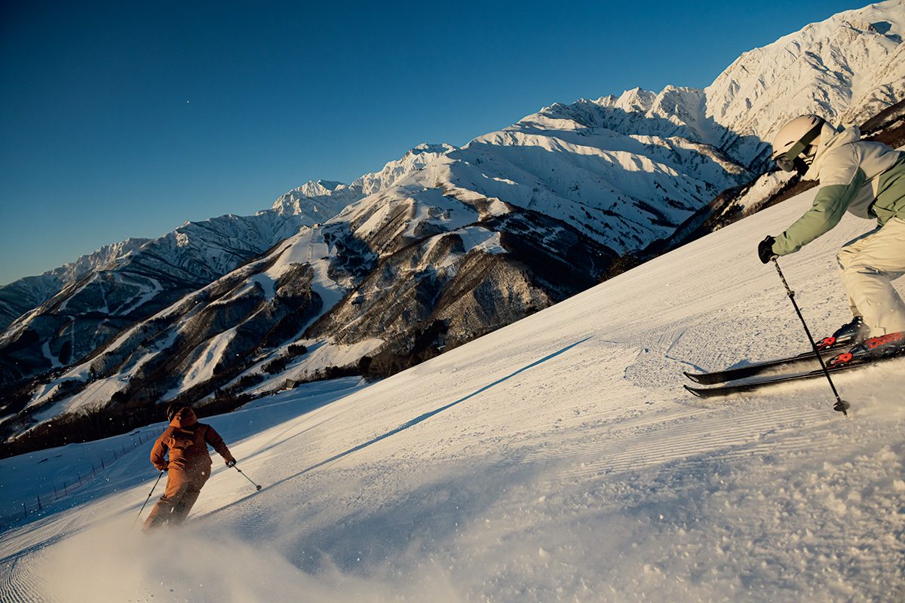
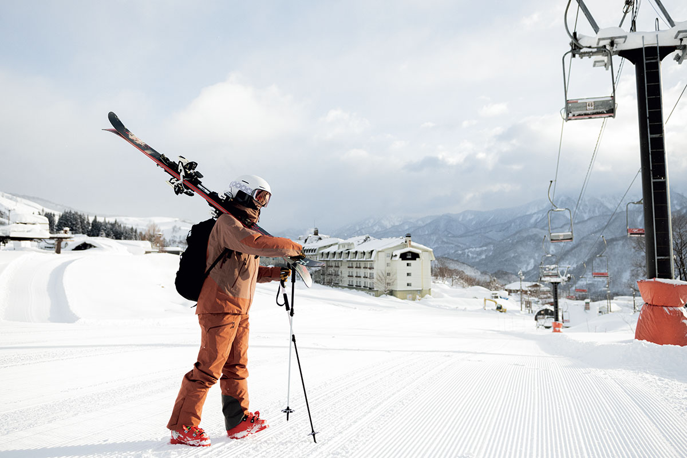
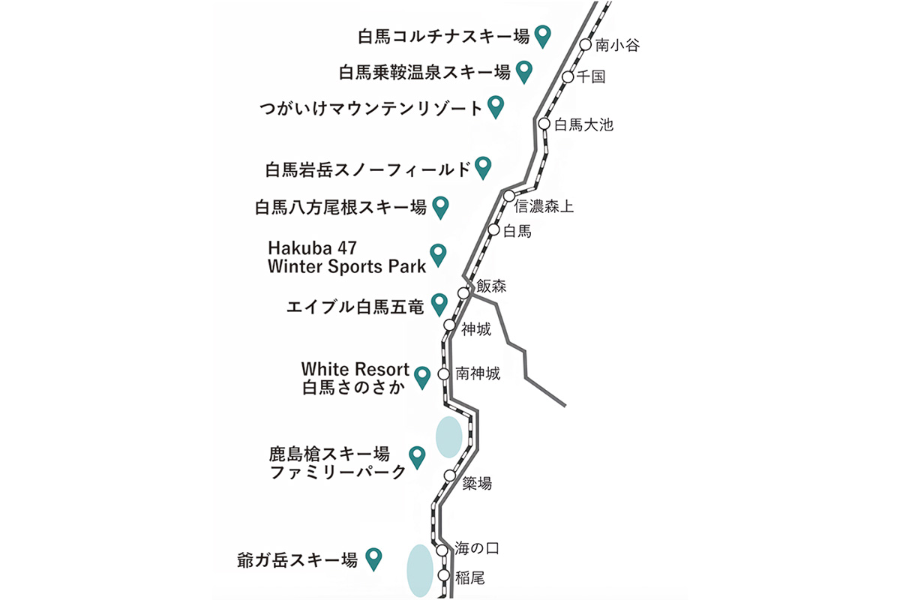
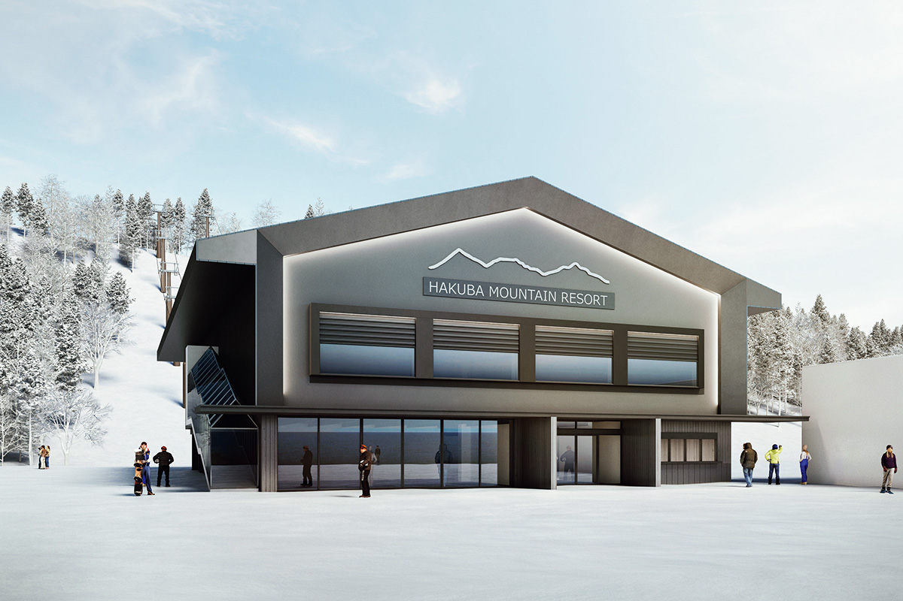

Префектура Нагано · Хакуба · горные лыжи
Hakuba Valley: десять горнолыжных курортов под пиками Северных Альп

Hakuba Valley на северо-западе префектуры Нагано объединяет десять горнолыжных курортов у подножия Северных Альп. Сюда со всего мира едут за лёгким сухим снегом, и к сезону 2025/26 курорты обновили трассы, базы и освещение.
Снег
Откуда берётся пудра

Над долиной стоит хребет Хакуба, часть Северных Альп, с вершинами около 3000 метров. Под ним и раскинулась Hakuba Valley, международный горный курорт, куда приезжают лыжники и сноубордисты из разных стран.
Своей пудрой, лёгким и сухим снегом, долина обязана географии. До Японского моря отсюда всего около 40 километров, и зимний муссон приносит к хребту огромное количество снега. При этом рельеф легко пропускает холодный воздух из глубины материка, поэтому температура держится стабильно низкой и снег долго остаётся сухим и рассыпчатым. Для катания трудно придумать условия лучше.

Курорты долины очень разные. Есть спокойные пологие склоны для тех, кто встаёт на лыжи впервые, есть участки, где снег не укатывают и можно кататься по целине, а самая длинная трасса тянется на 8000 метров. Скучно не будет ни новичку, ни опытному лыжнику.
В Hakuba Valley входят десять курортов: Jigatake, Kashimayari Family Park, White Resort Hakuba Sanosaka, Hakuba Goryu, Hakuba 47 Winter Sports Park, Hakuba Happo-one, Hakuba Iwatake Snow Field, Tsugaike Mountain Resort, Hakuba Norikura Onsen и Hakuba Cortina. На все десять действует единый ски-пасс.
Сезон 2025/26
Что обновили курорты
К сезону 2025/26 в Hakuba Valley многое переделали. На курорте Tsugaike Mountain Resort поставили дополнительные снежные пушки, чтобы склоны меньше зависели от погоды. Так появился «Луп 4000», маршрут длиной 4000 метров на искусственном снегу: по нему можно кататься, даже когда снега выпало мало.

На Hakuba Iwatake Snow Field полностью обновили базовый центр. В нём появились новые раздевалки и камеры хранения, а в магазине продают и снаряжение для зимнего спорта, и местные продукты Хакубы. На курорте Hakuba Goryu поставили новое светодиодное освещение и расширили склоны для вечернего катания.
Для тех, кто не катается
Долина старается быть интересной и тем, кто не встаёт на лыжи. На вершине горы Иватакэ устроена смотровая терраса с видом на Северные Альпы, а на прогулке по зимнему лесу на снегоступах можно почувствовать, каково это, оказаться в объятиях снежных гор.
Hakuba Valley
- Цены / Вход
- единый ски-пасс на 10 курортов на 1 день, взрослый 10 400 иен, детский 6000 иен (сезон 2025/26)
- Как добраться
- на машине около 1 часа от развязки Нагано (скоростная дорога Дзёсинъэцу), около 1 часа 30 минут от развязки Адзумино (скоростная дорога Нагано), около 1 часа от развязки Итоигава (скоростная дорога Хокурику)
- Сайт
- hakubavalley.com